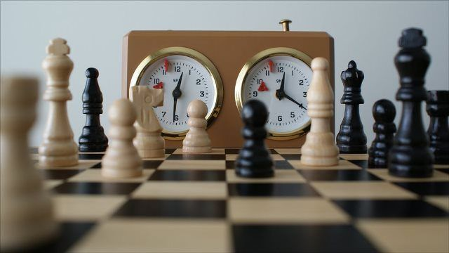

Club de Ajedrez
Tienes el suficiente IQ?
Tienes la vision necesaria para jugar ajedrez? si no, no te procupes con nostros aprenderas las bases de un jugador de este hermoso juego donde las mentes mas agiles son las triunfadoras, unete a nosotros ya que contamos con la ayuda del Maestro Anatoly Karpov que se conecta con nostros para compartir su experiencia como campeon del mundo.
Entender las aperturas
La apertura son las jugadas iniciales. Partiendo de la posición inicial, se han clasificado las distintas posibilidades que tienen cada uno de los bandos para conducir sus piezas. Se ha estudiado cada movimiento de las blancas, tras ése, cada posible respuesta de las negras, tras ése otra vez el de las blancas y así sucesivamente. En algunas líneas se han estudiado hasta la jugada 20 o más, se han clasificado, y están disponibles los análisis en los libros de aperturas de ajedrez.
POPULAR POSTS

Magnus Carlsen
Fabiano Caruana